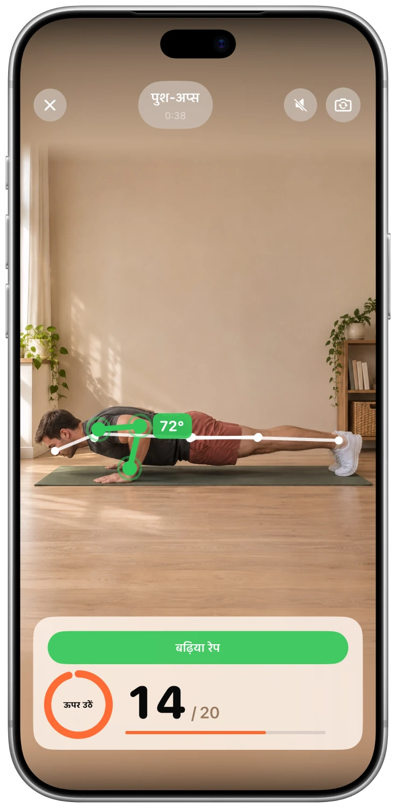
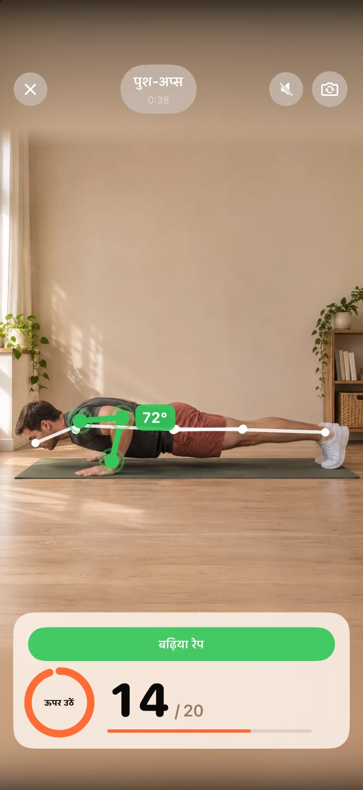
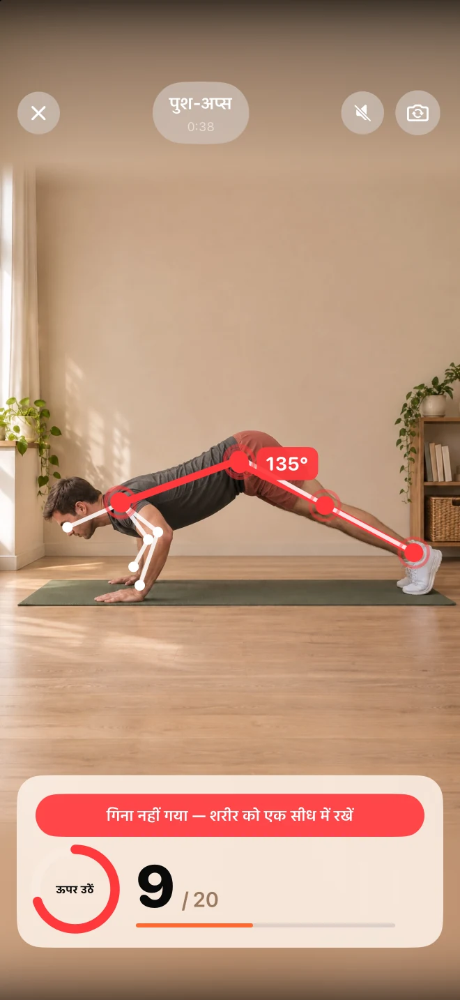
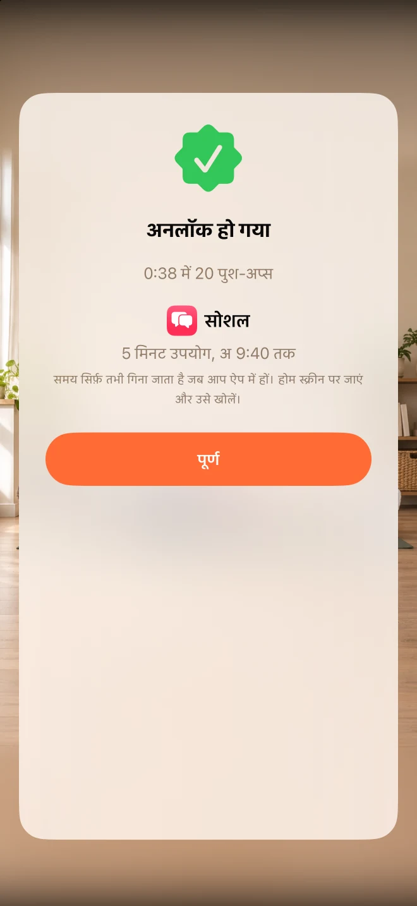

अपनी विकर्षणों का चयन करें।
उन ऐप्स का चयन करें जिनसे आप थोड़ा दूरी रखना चाहते हैं। अनलॉकवाई, ऐप्पल के स्क्रीन टाइम का उपयोग करके उन्हें ब्लॉक करता है।
फ़ीड देखने से पहले थोड़ा व्यायाम करें।
ऑटो-पायलट कम, आप ज़्यादा।
उन ऐप्स को ब्लॉक करें जो आपका बहुत सारा समय बर्बाद करते हैं। कुछ पुश-अप, स्क्वैट्स या जंपिंग जैक्स करें ताकि आप कुछ मिनट वापस पा सकें।
मुफ्त · कोई सब्सक्रिप्शन नहीं · कोई खाता नहीं।


ऐप स्क्रीनशॉट
आपको यह क्यों पसंद आएगा
उन ऐप्स का चयन करें जिनसे आप थोड़ा दूरी रखना चाहते हैं। अनलॉकवाई, ऐप्पल के स्क्रीन टाइम का उपयोग करके उन्हें ब्लॉक करता है।
पुश-अप, स्क्वैट्स या जंपिंग जैक्स में से चुनें। आपका आईफोन कैमरा, जब आप व्यायाम करते हैं तो आपकी संख्या को गिनता है, और आपको तुरंत प्रतिक्रिया मिलती है।
अपने स्वयं के पुरस्कार और दैनिक सीमा निर्धारित करें। कमाए गए मिनट ऐप का उपयोग करते समय गिने जाते हैं, फिर लॉक वापस आ जाता है।
एक नज़र डालें
वास्तविक स्क्रीन। आपको अंदर की जानकारी का बेहतर अनुभव होगा।



FAQ
शुरुआत करने से पहले ही जवाब
अनलॉकवाई, ऐप्पल के स्क्रीन टाइम का उपयोग करता है। आप ऐप्स का चयन करते हैं और सेटअप के दौरान अनुमति देते हैं। आप आईफोन सेटिंग्स में अनुमति को रद्द कर सकते हैं।
Unlocky आपकी रिकॉर्डिंग नहीं करता। कैमरे के फ़्रेम का विश्लेषण सीधे आपके iPhone पर उसी समय होता है। वीडियो और तस्वीरें न तो सहेजी जाती हैं, न अपलोड की जाती हैं।
हाँ। आप पुश-अप्स, स्क्वैट्स या जंपिंग जैक्स चुनें, और निर्धारित करें कि प्रत्येक सेट को कितने मिनट की कमाई होगी। एक दैनिक सीमा आपको एक सीमा बनाए रखने में मदद करेगी।
हाँ। अनलॉकई में कोई सदस्यता या भुगतान की आवश्यकता नहीं है। इसके लिए आपके आईफ़ोन में iOS 17 या उसके बाद का संस्करण होना आवश्यक है।
मुफ्त · कोई सब्सक्रिप्शन नहीं · कोई खाता नहीं।

अपनी गति से आगे बढ़ें और यदि कुछ भी दर्द हो तो रुक जाएं। यदि आपको कोई स्वास्थ्य समस्या है, तो कोई भी नया व्यायाम शुरू करने से पहले डॉक्टर से सलाह लें।